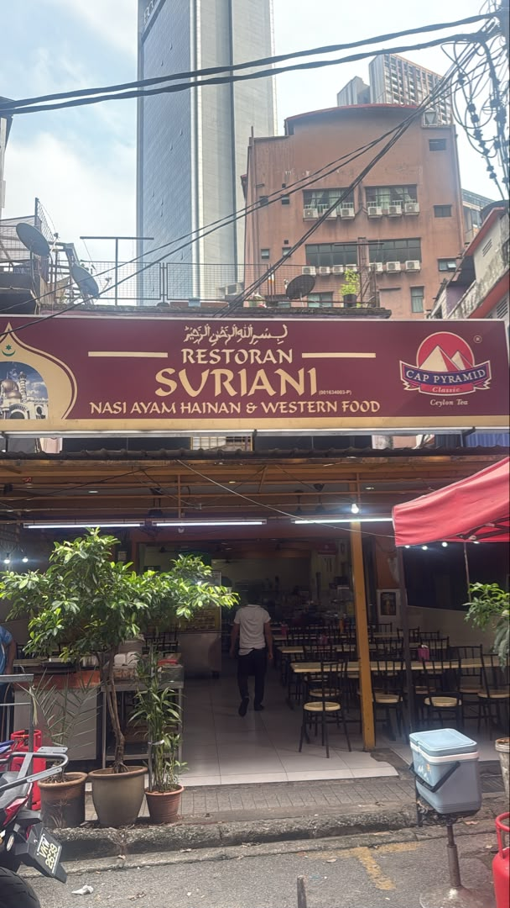
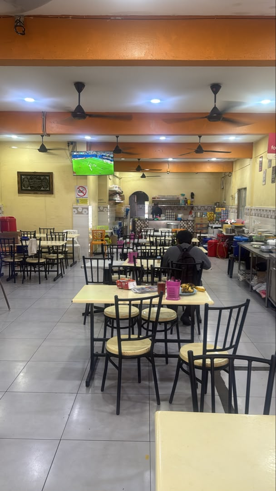
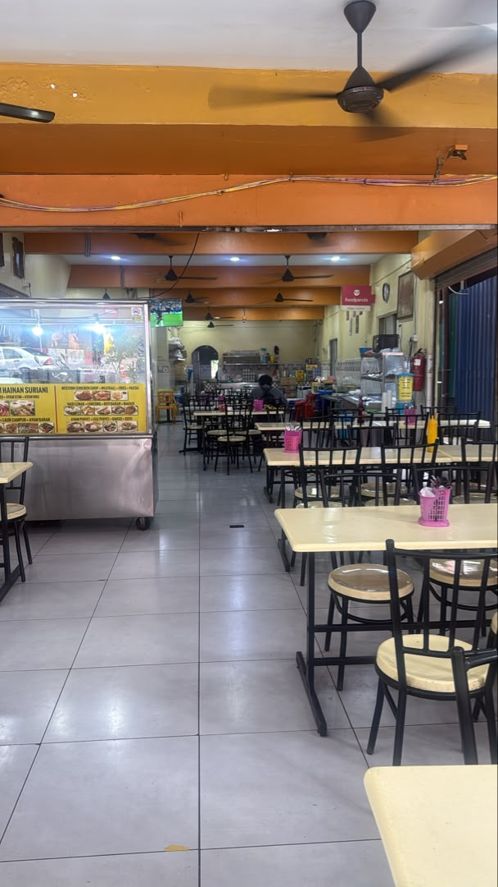
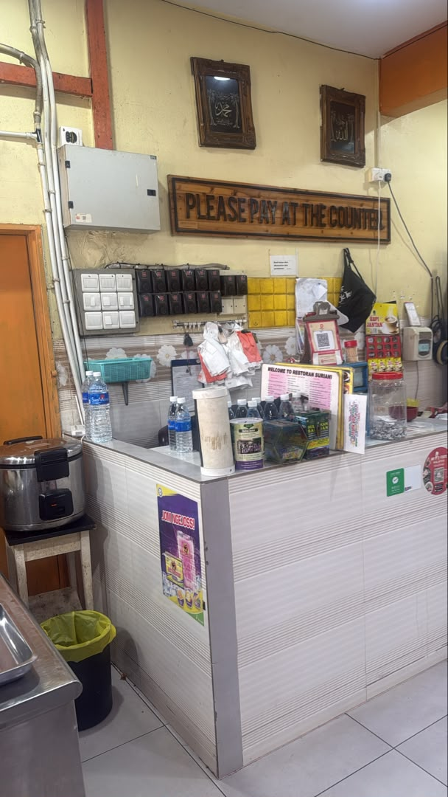

Kisah Kami
Restoran Suriani diasaskan oleh Rodiah Ahmad, yang berpindah ke Kuala Lumpur pada tahun 1980 dari kampung halamannya, Kuala Kangsar, Perak. Pada tahun 1986, beliau memulakan perjalanan kulinarinya dengan sebuah gerai makanan yang sederhana, di mana masakan Melayu ala rumahnya dengan cepat mendapat sambutan hangat daripada masyarakat setempat. Berbekalkan kejayaan awal ini, beliau menubuhkan Restoran Suriani pada tahun 1995, meletakkan asas kepada apa yang kini menjadi destinasi makan yang disenangi ramai di Pudu, Kuala Lumpur.
Selama lebih tiga dekad, restoran ini terus menghidangkan masakan panas, nasi ayam Hainan, serta hidangan barat, disediakan segar sepanjang masa. Kini, Restoran Suriani berdiri sebagai bukti dedikasi berterusan Rodiah Ahmad serta nilai kualiti dan keramahan yang diterapkannya sejak awal penubuhannya.
Katering & Tempahan Acara
Merancang majlis perkahwinan, hari jadi, acara korporat atau kenduri? Restoran Suriani sedia menyediakan katering untuk sebarang acara. Isikan butiran di bawah dan kami akan menghubungi anda melalui WhatsApp.
Galeri
Suasana dalam Restoran Suriani.




Lokasi & Waktu Operasi
28, Lorong 1/77a, Pudu, 55100 Kuala Lumpur, Wilayah Persekutuan Kuala Lumpur
| Setiap hari | Buka 24 jam |